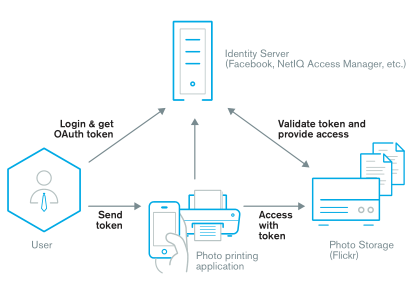
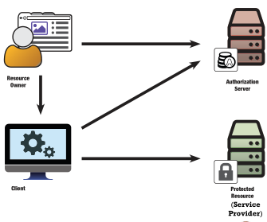

OAuth 2.0
Introduction
Start from an use case. Consider a photo lab printing your online photos directly from Facebook:

A token is generated to give a temporary access to the facebook photos. The token is used by printing application.
The flow can be split in four steps:
- Authentication → user login into social site, it may be not part of OAuth 2.0 Protocol.
- User consent → OAuth 2.0 allows user to decide what can be shared with third party apps. After that a specific token will be generated.
- Get Oauth Token → the third-party app receives an OAuth bearer token that can be used to act like a user and get information specified by the user. Inside the token there will be also access rights.
- Access Resource → the third-party app can now access the resource server using the token to get user’s data.
Details
The OAuth 2.0 authorization framework enables a third-party application to obtain limited access to an HTTP service or lets users allow applications to access resources on their behalf.
Involved entities
The main entities involved by OAuth 2.0 are:
- Resource owner → can access and delegate resources.
- Protected resources → information protected by Service Provider shared on owner’s request.
- Client → wish to access protected resources acting on owner’s behalf.
- Authorization server → generate tokens for the client and manage authentication and authorizations.

Token are opaque string used to grant delegated authorities. The content inside token is get by AS and RS with database lookup queries.
OAuth 2.0 relies on HTTP+TLS(SSL and TLS). It is not an authentication protocol but can be used to build one. An implementation is OpenID Connect which relies on OAuth 2.0.
Flow of the above image can be explained into these steps:
- client redirects the resource owner to the authorization server’s authorization endpoint;
- resource owner authenticates to the authorization server;
- resource owner authorizes the client;
- authorization server redirects resource owner back to the client with an authorization code;
- client sends the authorization code to the authorization server’s token endpoint, it also authenticate using its own credentials;
- authorization server issues an OAuth access token to the client;
- client access the protected resource using the access token.
During the entire phase OAuth grants to user the possibility to define which resource can be access and in which modality: time, type of action, etc.
After a token expire it can be refreshed to make valid for a new period.
The authentication between client and authentication server is made by a relationship between them. There must be a way to ensure that AS can trust the client1
To make an example the OAuth scopes of google API are:
- limiting access
- strings that represents what the token can do:
- client can ask for scopes
- resource owner is bound to scopes
- access token is bound to scopes
- type of action → read, write, delete
- type of resource → photo, metadata, profile
- time of access → user is offline, limited number of access
OAuth tokens are similar to capabilities, they can be transferred to other subjects so that permissions are delegated and permissions are decoupled from the identities of subjects.
Authentication
Use OAuth 2.0 for authentication is out of scope and is not a good idea. The assumption that possessions of a valid access token is enough to prove that a user is authenticate is tre only in some cases. Authentication is about the user and his presence with the application.
OpenID Connect
Open Standard published in early 2014 that defines an interoperable way to use OAuth2.0 to perform user authentication. It is built directly on OAuth 2.0
JWT
JWT stands for JSON Web Token, it defines a container to transport data between interest parties. It is a format for OAuth 2.0 access token.
The 3 main components are:
- Header → identifies algorithm used to sign.
- Payload → information actually used for access control.
- Signature → used to ensure token integrity.
with google API an Authorization code must be generated and used to ensure this trust relationship.
↩︎